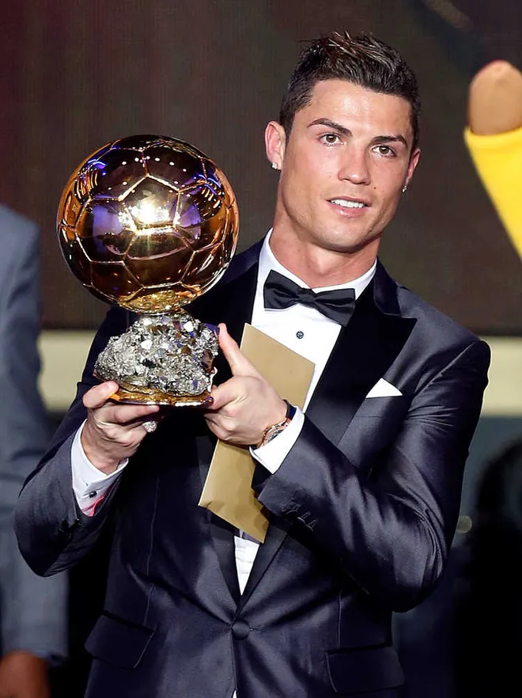
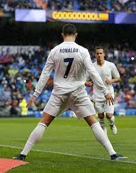

Ronaldo
 Cristiano Ronaldo, ook wel CR7 genoemd, is een beroemde voetballer die nu voor de club Al-Nassr FC speelt waar hij jaarlijks ruim 200 miljoen euro per jaar daar verdient! Maar hoe komt het nou dat hij zo beroemd is en dat hij zoveel verdient?
Ronaldo's carrière
Ronaldo begon al met voetballen als kind bij de amateurclub FC Andorhina. Later bij CD National en daarna, op twaalfjarige leeftijd, nam hij deel in de jeugdopleiding van Sporting CP. Vijf jaar later, in oktober 2002, kwam hj in een het elftal van Sporting CP waar hij 2 doelpunten tegen Moreirense (3-0) wist te scoren. In de zomer van 2003 moestem ze tegen Manchester United spelen. Ze hadden met 3-1 gewonnen. De spelers van Manchester United gaven aan hun coach Alex Ferguson aan dat ze liever met Ronaldo speelden. Hij was het daar mee eens en had Ronaldo voor 12 miljoen pond overgekocht naar Manchester United.
In zijn eerste seizoen bij die club won Ronaldo al een trofee, de FA cup. Hij ontwikkelde zich tot een van de beste voetballers ter wereld. Hij won meerdere competities bij Manchester United. In juni 2009 ging Ronaldo voor een bedrag van 94 miljoen euro naar Real Madrid. In het eerste seizoen won hij geen enkele prijzen, maar in het seizoen van 2010/2011 brak hij het doelpuntrecord van beide Hugo Sánchez en van Telmo Zarra. Hij eindigde het seizoen met 40 doelpunten, in het seizeon van 2011/2012 met 46 doelpunten en in het seizoen van 2014/2015 met 48 doelpunten!
In julie 2018 werd Ronaldo voor een bedrag van 105 miljoen euro overgekocht naar Juventus. vel, luctus pulvinar, hendrerit id, lorem. Maecenas nec odio et ante tincidunt tempus. Donec vitae sapien ut libero venenatis faucibus. Nullam quis ante. Etiam sit amet orci eget eros faucibus tincidunt. Duis leo. Sed fringilla mauris sit amet nibh. Donec sodales sagittis magna. Sed consequat, leo eget bibendum sodales, augue velit cursus nunc, quis gravida magna mi a libero. Fusce vulputate eleifend sapien. Vestibulum purus quam, scelerisque ut, mollis sed, nonummy id, metus. Nullam accumsan lorem in dui. Cras ultricies mi eu turpis hendrerit fringilla. Vestibulum ante ipsum primis in faucibus orci luctus et ultrices posuere cubilia Curae; In ac dui quis mi consectetuer lacinia.